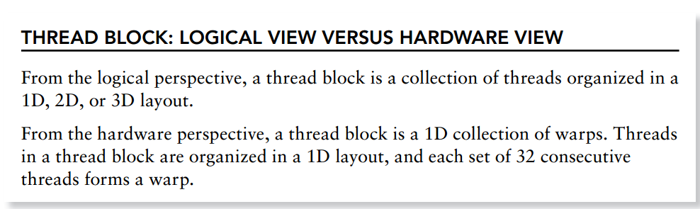

8_Understanding_the_nature_of_WARP¶
Launching kernel时,从软件角度看,所有的线程是并行的.
但从硬件角度来讲,并不是所有的线程同时执行.
cuda中,将32个线程分到一个单元,该单元称为warp.
warp数计算¶
分配的warp数 = 1个Block的threads总数 / warpSize , 然后向上取整,
即 分配的warp数 = ceil(1个Block的threads总数 / warpSize)
如果现在有80个线程,则会分配3个warp,即96个线程来支持80个线程,尽管这些线程没有用,但是仍然会消耗SM资源,比如说寄存器.
warp Divergence¶
一个warp中的32个threads需要执行相同的指令,但是如果32个线程中遇到控制流语句时,如果进入不同的分支,那么同一时刻除了正在执行的分支外,其余分支被阻塞了,会影响性能.这类问题就是warp divergence. 比如在一个warp中程序如下:
if(cond) {} else {}
如果有16个thread的cond为True,则这16个线程执行,同时其余16个线程被暂停.等这16个线程执行完之后,再执行其余16个线程.因此就会导致性能减半.
为了获得最好的性能,需要避免同一个warp存在不同的执行路径.
如何避免warp divergence¶
将条件改为以warp大小为步调,然后取奇偶数,
if((cond/warpSize) % 2) {} else {}
用nvprof来分析branch的效率,可以用来检查是否有可以提高的必要性.
nvprof --metrics branch_efficiency ./simpleDivergence
nvcc -g -G 编译时不做branch 的优化 nvcc -O3 编译时会做branch的优化